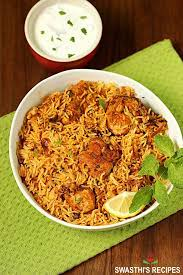

I am Karanam Gopichand.I am from Andhrapradesh,india. I did my undergrad in the stream of electronics and communication engineering at Narasaraopeta engineering college . My hobbies are Painting and Drawing.My daily life activities are playing cricket and watching movies. As like everyone i have a dreams and aspirations and set goals and work hard with right determination.
I like chicken biryani because my mother cook chicken biryani very well,she is master of it.Ingredients like pepper,cardamom,cinnamon,corianderleaves and garlic which it gives more taste to biryani.
| Game Name | Reason | Hours/weeks |
|---|---|---|
| Cricket | Body fitness | 4 |
| Volleyball | Teamwork | 6 |
| Chess | Improves concentration | 9 |
| Badminton | Stressrelief | 5 |
Sorting an array of objects by property valuesStack overflow
@function quick-sort($list) {
$less: ();
$equal: ();
$large: ();
@if length($list) > 1 {
$seed: nth($list, ceil(length($list) / 2));
@each $item in $list {
@if ($item == $seed) {
$equal: append($equal, $item);
} @else if ($item < $seed) {
$less: append($less, $item);
} @else if ($item > $SEED) {
$large: append($large, $item);
}
}
@return join(join(quick-sort($less, $order), $equal), quick-sort($large, $order));
}
@return $list;
}
snippet code